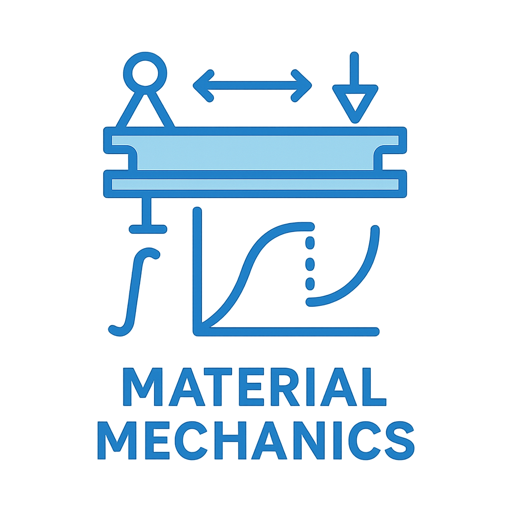
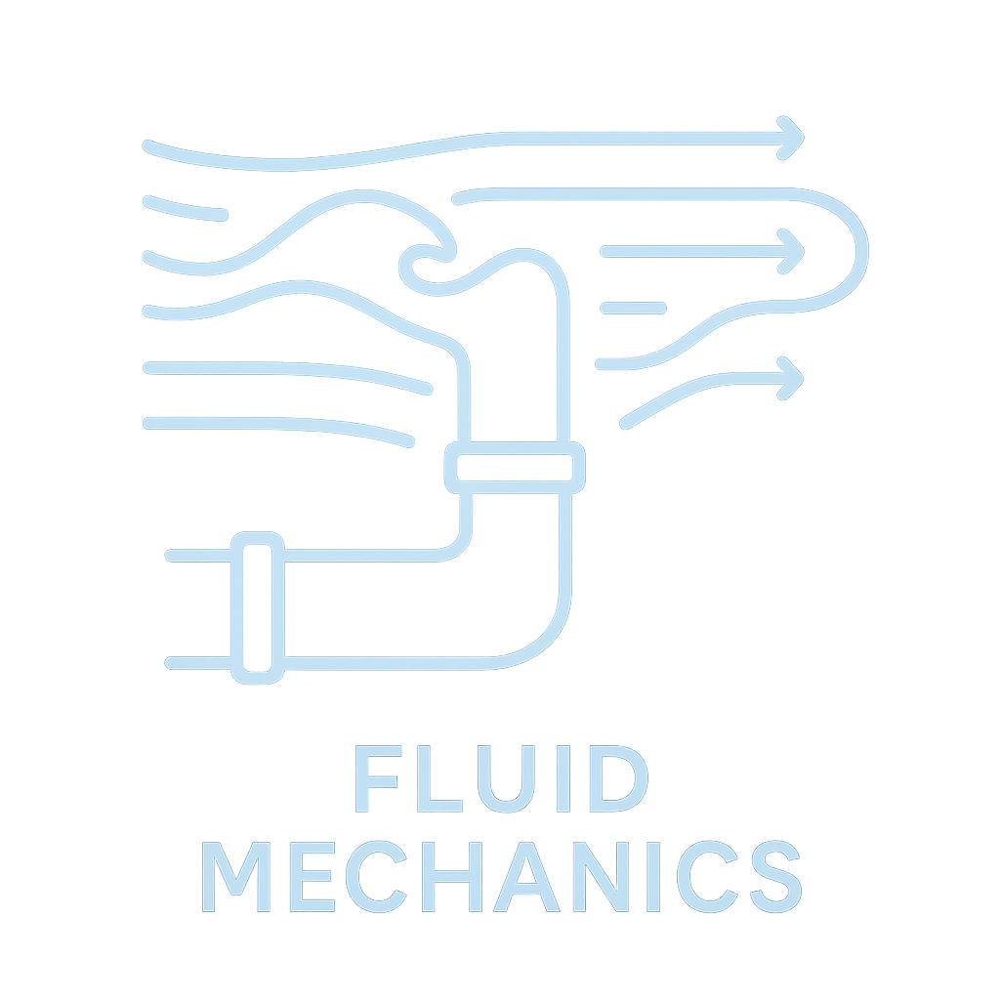

2003–2024年度・4科目
岡山大学大学院入試の数学・材料力学・流体力学・熱力学を、年度別にすぐ探せる非公式の学習用アーカイブです。
Archive overview
問題PDFは全科目・全年度に収録。解答は非公式資料です。
Subjects
各科目のページから、22年分の問題と収録済み解説へ移動できます。
01
微分積分、線形代数、微分方程式、ベクトル解析など。
HTML解説 21年度分

02
応力、ひずみ、はり、ねじり、座屈、強度設計など。
HTML解説 19年度分

03
静水力学、ベルヌーイの定理、粘性流れ、運動量保存など。
HTML解説 14年度分
04
状態変化、エントロピー、熱機関、各種サイクル、伝熱など。
HTML解説 20年度分
How to use
まず、学習したい4科目から年度一覧を開きます。
原本の問題PDFを開き、本番を意識して自力で解きます。
HTML解説や非公式解答案は参考資料として使い、原本・教科書と照合します。
Before you start
岡山大学が運営・監修する公式サイトではありません。掲載する解説・解答案には誤りを含む可能性があります。
利用案内と免責事項を確認する →